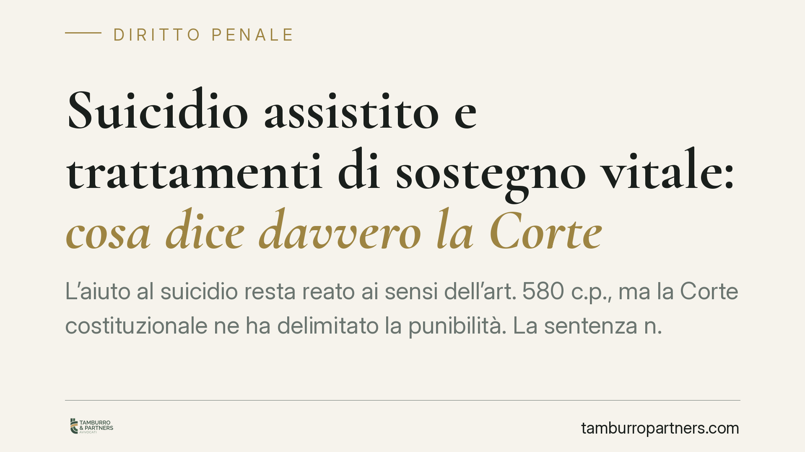

Suicidio assistito e trattamenti di sostegno vitale: cosa dice davvero la Corte
L'aiuto al suicidio resta reato ai sensi dell'art. 580 c.p., ma la Corte costituzionale ne ha delimitato la punibilità. La sentenza n. 242/2019 individua quattro condizioni cumulative: la più discussa riguarda la dipendenza da trattamenti di sostegno vitale. Chi non ne dipende ricade fuori dall'area di non punibilità. Vediamo perché il confine conta e chi può, oggi, modificarlo.

Il quadro: l'art. 580 c.p. e la sentenza n. 242/2019
L'art. 580 del Codice penale punisce chi agevola l'esecuzione dell'altrui suicidio. La norma resta pienamente in vigore.
Con la sentenza n. 242 del 2019 la Corte costituzionale ha però dichiarato l'illegittimità parziale della disposizione, escludendo la punibilità dell'aiuto al suicidio quando ricorrono quattro requisiti cumulativi (devono sussistere tutti insieme):
- la persona è affetta da una patologia irreversibile;
- la patologia è fonte di sofferenze fisiche o psicologiche che il paziente reputa intollerabili;
- il paziente è tenuto in vita da trattamenti di sostegno vitale (è la formulazione impiegata dalla Corte);
- il paziente è capace di prendere decisioni libere e consapevoli.
Alle condizioni sostanziali si aggiungono garanzie procedurali: verifica delle condizioni e delle modalità da parte di una struttura pubblica del Servizio sanitario nazionale, previo parere del comitato etico territorialmente competente.
Il nodo del "sostegno vitale"
Il terzo requisito è il più selettivo. Se il paziente non dipende da trattamenti di sostegno vitale — ad esempio ventilazione meccanica, alimentazione o idratazione artificiali — non rientra, allo stato attuale della giurisprudenza costituzionale, nell'area di non punibilità delineata dal 2019.
È un confine netto e, per molti versi, discusso: esistono patologie irreversibili e altamente invalidanti che, pur causando sofferenze gravissime, non comportano dipendenza da macchinari o presìdi di sostegno vitale. In questi casi l'aiuto al suicidio continua a ricadere sotto la sanzione dell'art. 580 c.p.
La Corte ha più volte ribadito che l'eventuale ampliamento dei presupposti — inclusa la revisione o l'eliminazione del requisito del sostegno vitale — è materia di scelta del legislatore, non della giurisprudenza. In assenza di un intervento normativo statale, il perimetro fissato nel 2019 rimane il riferimento vincolante.
Cosa non copre la Legge n. 219/2017
È essenziale distinguere due piani spesso confusi.
La L. 22 dicembre 2017, n. 219 disciplina il consenso informato e le disposizioni anticipate di trattamento. Essa riconosce il diritto della persona a rifiutare o interrompere trattamenti sanitari, comprese alimentazione e idratazione artificiali, con accesso alle cure palliative e alla sedazione palliativa profonda.
Questo è un piano diverso dall'aiuto attivo al suicidio. Il rifiuto o l'interruzione delle cure attiene al diritto di lasciarsi morire non attivandosi o disattivando un trattamento; l'aiuto al suicidio implica invece la messa a disposizione dei mezzi per l'autosomministrazione. Solo il secondo profilo è governato dall'art. 580 c.p. e dai limiti della sentenza n. 242/2019.
Il riparto Stato–Regioni
Un ulteriore livello riguarda le competenze. La disciplina penale sostanziale — cioè cosa sia punibile e a quali condizioni — è materia riservata allo Stato. Le Regioni non possono ampliare né restringere i presupposti di non punibilità fissati dalla Corte.
Alle Regioni possono spettare, semmai, profili organizzativi e procedurali connessi all'erogazione delle prestazioni sanitarie sul territorio, nei limiti della competenza in materia di tutela della salute. Iniziative legislative regionali che pretendessero di incidere sui presupposti sostanziali dell'aiuto al suicidio sarebbero esposte a censure di legittimità costituzionale.
Avvertenza metodologica
Questo contributo è ancorato alla sentenza n. 242/2019, il cui testo è verificabile. Eventuali pronunce successive richiedono, prima di qualsiasi valutazione, il confronto con il testo ufficiale pubblicato dalla Corte costituzionale: numerazione, oggetto e giudice rimettente vanno riscontrati sulla fonte diretta, evitando ricostruzioni indirette.
Cosa fare in concreto
- Verificate la sussistenza congiunta dei quattro requisiti della sent. 242/2019: mancandone uno, l'area di non punibilità non opera.
- Distinguete il rifiuto/interruzione di cure ex L. 219/2017 dall'aiuto attivo al suicidio ex art. 580 c.p.: sono istituti diversi con regole diverse.
- Consultate il testo ufficiale delle pronunce sul sito della Corte costituzionale prima di trarre conclusioni operative.
- Documentate condizioni cliniche, capacità decisionale e passaggi procedurali (struttura SSN, comitato etico) previsti dal quadro vigente.
- Data la persistente rilevanza penale ex art. 580 c.p., ogni iniziativa richiede una verifica giuridica preventiva delle condizioni concrete del caso.
---
Contributo informativo a cura di Tamburro & Partners Avvocati - Avv. Giuseppe Tamburro. Non costituisce parere legale.
Ogni condominio ha una storia a sé.
Se gestisci un'amministrazione e vuoi un confronto su una specifica questione condominiale, scrivi allo studio. Ti rispondiamo entro un giorno lavorativo.